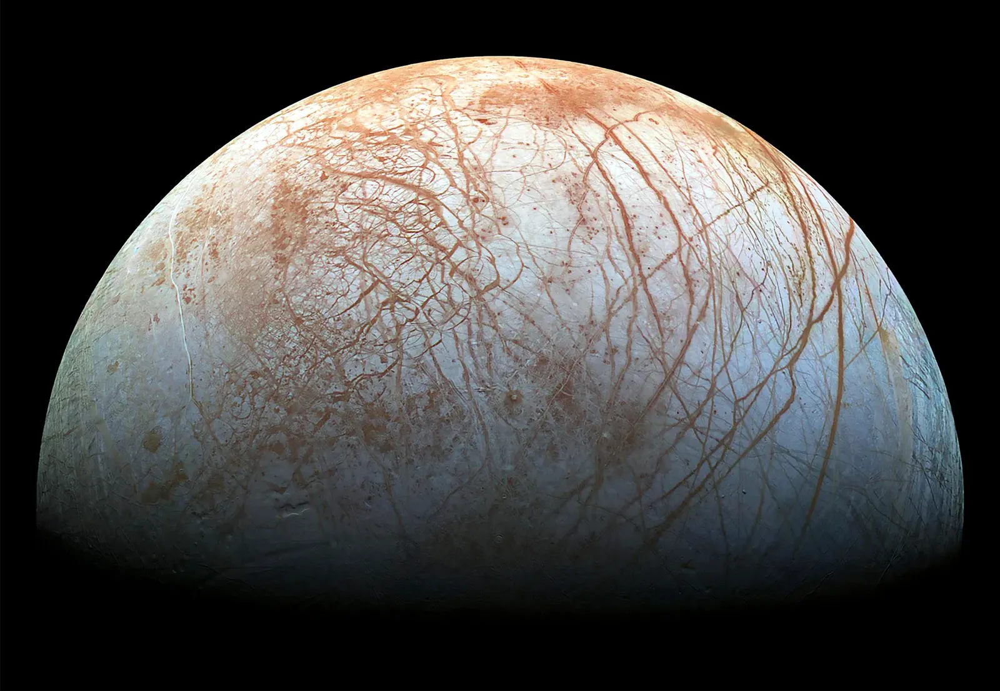

The Tantalizing Mystery of the Solar System’s Hidden Oceans
The moons orbiting Jupiter and Saturn appear to have subsurface oceans which could support life beyond Earth. But it’s not clear why these seas exist at all.

THE ORIGINAL VERSION of this story appeared in Quanta Magazine. For most of humankind’s existence, Earth was the only known ocean-draped world, seemingly unlike any other cosmic isle.
But in 1979, NASA’s two Voyager spacecraft flew by Jupiter. Its moon Europa, a frozen realm, was decorated with grooves and fractures—hints that there might be something dynamic beneath its surface
Then, in 1996, NASA’s Galileo spacecraft passed by Europa and detected a strange magnetic field coming from within. “We didn’t understand what it was,” said Margaret Kivelson, a space physicist at the University of California, Los Angeles, who was in charge of the spacecraft’s magnetometer. Eventually, she and her team realized that an electrically conductive fluid—something inside the moon—was convulsing in response to Jupiter’s immense magnetic field. “The only thing that made any sense,” Kivelson said, “was if there was a shell of liquid melt beneath the surface of the ice.”
In 2004, NASA’s Cassini spacecraft arrived at Saturn. When it observed Saturn’s small moon Enceladus, it found coruscating icy plumes erupting from vast chasms at the moon’s south pole. And when Cassini flew through these spouts, the evidence was unmistakable—this was a salty ocean vigorously bleeding into space.
Now Earth’s oceans are no longer unique. They’re just strange. They exist on our planet’s sunlit surface, while the seas of the outer solar system are tucked beneath ice and bathed in darkness. And these subterranean liquid oceans seem to be the rule for our solar system, not the exception. In addition to Europa and Enceladus, other moons with ice-covered oceans almost certainly exist as well. A fleet of spacecraft will explore them in detail over the next decade.
All of this raises an apparent paradox. These moons have existed in the frosty reaches of our solar system for billions of years—long enough for residual heat from their creation to have escaped into space eons ago. Any subsurface seas should be solid ice by now. So how can these moons, orbiting so far beyond the sun’s warmth, still have oceans today?
Mounting evidence indicates that there may be multiple ways to sustain liquid-water oceans over billions of years. Decoding those recipes could accelerate our quest to determine how easy, or troublesome, it is for life to emerge throughout the cosmos. Freshly analyzed data from old spacecraft, plus recent observations by NASA’s Juno spacecraft and the James Webb Space Telescope, are adding to the growing evidence that these warm oceans contain chemistry beneficial to biology, and that the inner solar system is not the only place life could potentially call home.
These oceanic moons also offer a grander possibility. Temperate, potentially livable oceans could be an inevitable consequence of planet formation. It may not matter how far a planet and its moons are from their star’s nuclear bonfire. And if that’s true, then the number of landscapes we might explore in our search for life beyond Earth is nearly limitless.
“Oceans under icy moons seem weird and improbable,” said Steven Vance, an astrobiologist and geophysicist at NASA’s Jet Propulsion Laboratory.
And yet, defiantly, these alien seas remain liquid.
The Eternal, Infernal Tides
In June 1979, a month before Voyager 2’s close flyby of Europa, scientists announced that Voyager 1 had glimpsed titanic, umbrella-shaped plumes billowing into space above Io—the eruptive fingerprints of several volcanoes.
This observation should have been baffling: Volcanism requires an internal heat source, and Io, like the other icy moons, should have been nothing more than embers. But a few months earlier, an independent team of scientists had correctly predicted that Io might be a hyperactive volcanic world.
They’d based their prediction on the orbital dance of Jupiter’s largest moons. For every four orbits that Io completes, Europa makes two and Ganymede one. This orbital configuration, known as a resonance, causes Io to wobble back and forth, making its orbit elliptical. When Io is closer to Jupiter, the planet’s gravity yanks on it more intensely. When it’s farther away, Jupiter’s tug is weaker. That never-ending gravitational tug-of-war makes the rocky surface of Io move up and down by 100 meters, the same height as a 30-story building. These are tides, like Earth’s—just in solid rock, not water.
Those tides create friction within the moon that generates heat. And that tidal heating is strong enough to melt the rock deep inside Io. “Io doesn’t have a water ocean, but it probably has a magma ocean,” Nimmo said. (Galileo picked up on a secondary magnetic field there too, generated by a global subterranean reservoir of molten rock.)
Europa also experiences some tidal heating. But how much those tides warm an ocean depends on where within the moon they occur; in other words, enough of that heat needs to get to the ocean to keep it liquid. “The tidal heating could be happening in the ice shell itself, or it could be happening in the rocky core underneath,” Nimmo said. Scientists don’t know which is correct—so they can’t say for sure how much tidal heating contributes to Europa’s liquid interior.
Enceladus, too, is stretched and squeezed by its gravitational tango with a neighboring moon called Dione. In theory this could produce tides that warm the moon’s interior. But the tides created by its resonance with Dione, at least on paper, do not seem to be sufficient to explain its ocean. The numbers don’t yet work, Sori said, and the amount of heat produced isn’t enough to maintain a global ocean for the billions of years since the solar system’s birth. Perhaps, as with Europa, scientists don’t quite know where the tides are creating heat within Enceladus.
Another confounding factor is that orbits aren’t fixed over astronomical time. As planetary systems evolve, moons migrate, and “tidal heating can turn on and off as things drift in and out of different resonances,” said David Rothery, a planetary scientist at the Open University in the United Kingdom. Scientists suspect this happened with Miranda and Ariel, two Uranian satellites that may be former dance partners; these moons look as if they were once geologically active but are now arguably frozen to their cores.